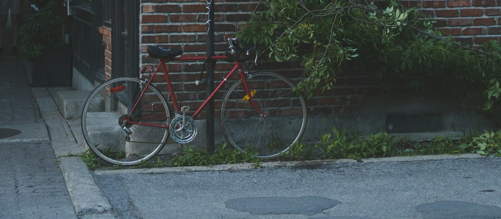

Kontakt
Seestrasse 80, 8988 Moorwil
044 000 70 70
info@velo-kettenblatt.example

Öffnungszeiten
- Mo bis Fr
- 14:00 bis 18:30
- Samstag
- 08:00 bis 14:00
Unter der Woche öffnen wir am Nachmittag.
Betriebsferien
- 26. Oktober bis 7. November 2026
- 14. Dezember 2026 bis 9. Januar 2027
Termine
Rufen Sie für Service oder Beratung kurz an. Auch ausserhalb der Öffnungszeiten finden wir einen Termin.
So kommen Sie zu uns
Das Geschäft liegt an der Seestrasse, die Bushaltestelle ist gleich davor.
Mit dem Bus ab Bahnhof Moorwil
- Richtung Moorwil: Minute 22 und 52
- Richtung Seewil: Minute 03 und 33
- Ab Bahnhof Moorwil: Minute 00 und 30
Schreiben Sie mir
Das Formular öffnet Ihr E-Mail-Programm mit Ihrer Nachricht an info@velo-kettenblatt.example.